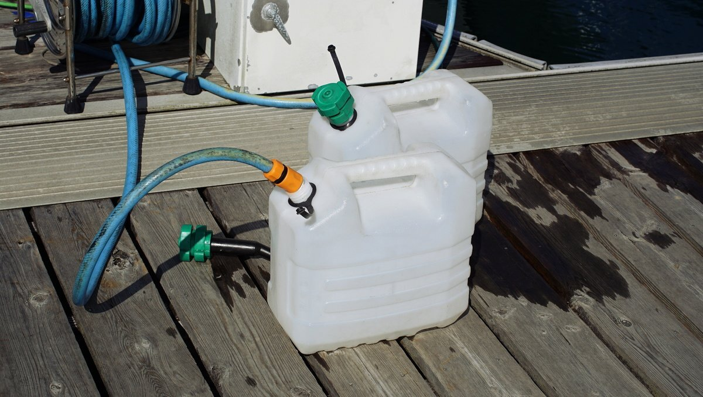

water storage
Our main water tank carries 170 L (45 US gal), our secondary has 50 L (13 US gal), while an additional 100 L (26 US gal) is stored in jerry cans.
In 2020, before the passage from Japan to Canada we replaced the holding tank with a water tank (see tank in below photo). We didn't have many options, but found a small water tank typically used in a lorry in Japan.

When it is not possible to dock at a marina, we use smaller(4x10L|4x2.6 US gallons) jerry cans to ferry water from shore. While it requires more trips, the lighter containers are less prone to breakage. When filling up, we filter the water.
Pino has no watermaker, and doesn't want one. See our water filtration systems.